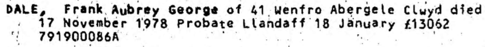
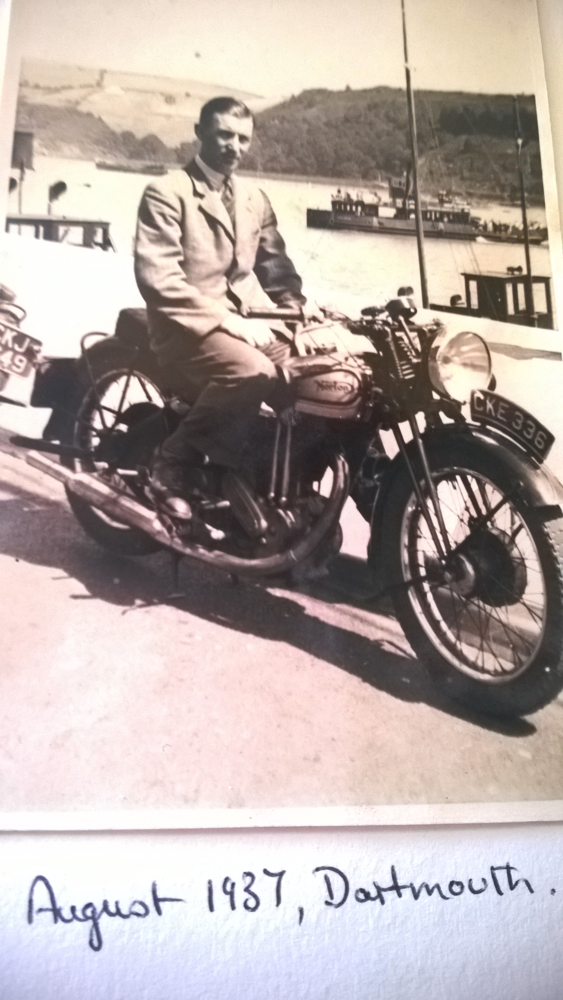

Frank Aubrey George Dale 1906 - 1978
[ Home ] | [ Calendar ] | [ Surnames Index ] | [ Errors ] | [ Family History ]The child of Thomas Dale (an electrical fitter) and Rosa Knowler (a domestic housemaid), Frank Dale, the third cousin twice-removed on the father's side of Nigel Horne, was born in Strood, Kent, England on 16 Jun 19061,2,3,4,5,6, was baptised there at St Nicholas on 5 Jul 1906. He married Ellen Musgrove (with whom he had 1 surviving child, ) in Sheppey, Kent, England on 2 Jun 19419.
During his life, he was living at 61 Drayton Road, Portsmouth, Hampshire, England on 2 Apr 19111; at Halfway Road, Minster, Minster In Sheppey in Sheppey on 19 Jun 192110; and at 41 Wenfro, Abergele, Clwyd, Wales in 1978.
He died on 17 Nov 1978 in Abergele3,7,8 (myocardial Infarction; Cerebral Arteriosclerosis).
Parents
- Thomas Henry was born on 12 Jan 1882
- Rosa Ellen was born c. Nov 1879
Citations
- 1911 Census for England & Wales - Findmypast (was age 4 and the son of the head of the household)
- England & Wales births 1837-2006 - Findmypast
- England & Wales deaths 1837-2007 - Findmypast
- http://search.ancestry.co.uk/cgi-bin/sse.dll?db=freebmdbirth&h=40954695&ti=5538&indiv=try&gss=pt
- http://search.ancestry.co.uk/cgi-bin/sse.dll?db=onsdeath93&h=48066052&ti=5538&indiv=try&gss=pt
- Class: RG14; Piece: 5506; Schedule Number: 293
- England & Wales Government Probate Death Index 1858-2019 - Findmypast
- http://search.ancestry.co.uk/cgi-bin/sse.dll?db=onsdeath93&h=48066052&ti=5538&indiv=try&gss=pt
- England & Wales Marriages 1837-2005 - Findmypast
- 1921 Census Of England & Wales - Findmypast (was age 15 and the son of the head of the household)
Media
Frank Dale - probate

Frank Dale

England & Wales births 1837-2006 - BMD/B/1906/3/AZ/000144/357
England & Wales deaths 1837-2007 - BMD/D/1978/4/AZ/000255/052
England & Wales marriages 1837-2005 - BMD/M/1941/2/AZ/000349/024
England & Wales Government Probate Death Index 1858-2019 - GBOR/GOVPROBATE/C/1979-1979/00053474
Kent Baptisms - PRS/MEDWAY/BAP/0226337
Family Trees - FMP/1196850692
Family Tree
Map
Generated by ged2site. Last updated on Jul 3, 2024
Known Issues
Residence record for 1978 contains no citation
Listed in the residence for 1978, but spouse Ellen Musgrove is not